The cement cap and the top two feet of the chimney take the weather first. Caps crack, turn sandy and lift off the top course, opening a gap straight into the flue. We slope a cap so water runs off instead of pooling, and recommend replacing it about every twenty years.
Masonry restoration · Est. 1907
Brick & chimney work that disappears into the building.
We repair, rebuild and replace anything made of brick, block, stone, stucco or concrete — matching mortar and brick closely enough that the repair reads as original work, not maintenance.
- Family trade
- Since 1907
- BBB
- A+ accredited
- Crew
- In-house only
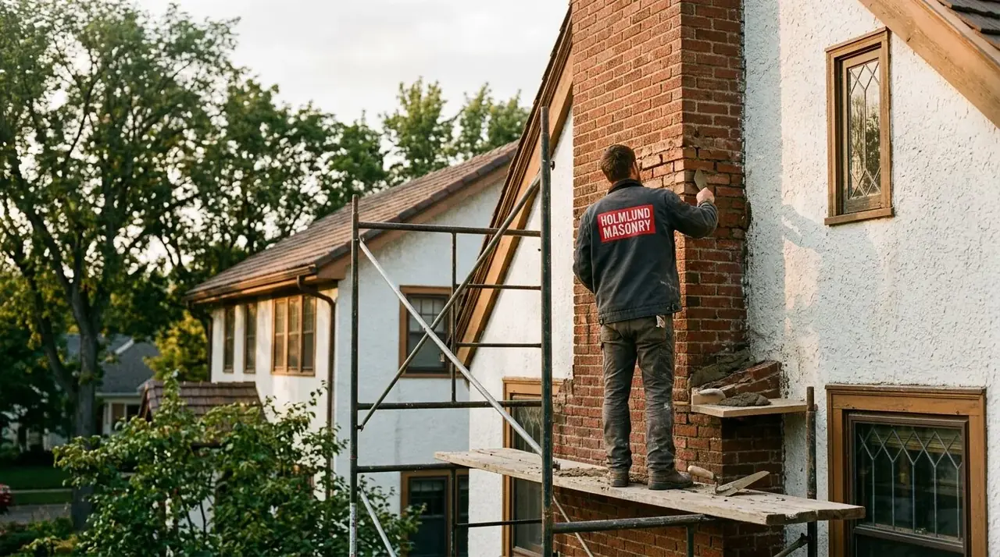
Services at a glance:
Chimney repair
Tuckpointing
Brick & stone replacement
Color matching
Waterproofing
No job too small
A good tuckpointing job is not noticeable.
“My goal is to make the project look original, like it had never needed maintenance. Nobody notices a good tuckpointing job — it is only noticeable if it had been matched poorly.”
Tim Holmlund, third-generation mason
Holmlund Masonry has worked on brick, block and stone across the Twin Cities for four generations of the same family — repairing what water has taken apart, and rebuilding what is past repair.
The story of the companySince 1907Same family, same trade
BBB A+Accredited since 1994
In-houseEmployees, no subcontractors
InsuredLicensed & bonded
02 — Diagnostics
Most masonry work begins with water.
Masonry outlasts every other building material — as long as its joints stay full and tight. Water finds the same five places on almost every building we open up.
Cornices, parapets and the top four feet of a wall are more exposed than anything below them. Grind and tuckpoint here first — it is where a wall begins to fail, and it is the cheapest place to stop it.
Rowlocks under windows must pitch down and away from the glass. When they do not, water sits against the sill, finds the caulk joint, and works in behind the brick.
Splash-back at the base of a downspout washes mortar out of the joints within a few seasons. Spouts need to discharge onto grade, away from the wall.
The base course takes ground splash, snow pack and rising damp. This is where spalling begins — the face of the brick separating from the brick itself — and where a sealer earns its keep, once the surface is watertight and free of voids.
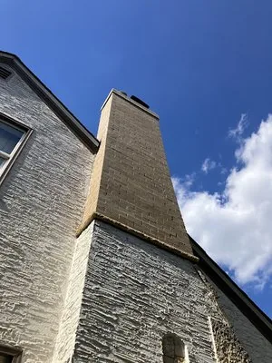
Sealing is preventive maintenance, not a repair. The masonry has to be sound first — we tell you when it is not.
03 — What we do
Repair, rebuild, replace — then make it vanish.
Six trades, one crew. Every job starts with the same question: where is the water getting in, and what is the minimum that makes the structure durable again?
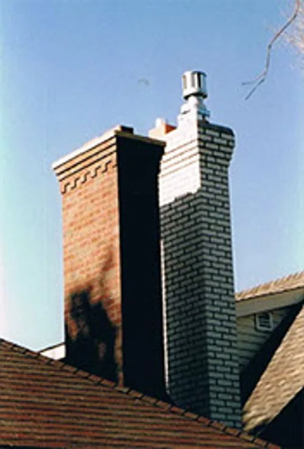
01
Chimney repair & rebuild
Rebuilt from the roofline up, or down to the attic floor when the base has moved. Corbelled tops, sloped caps, new flue tiles and relining — following the original design, in brick that matches.
02
Tuckpointing
Joints ground out three-quarters of an inch and refilled deep, then finished with a jointing tool so the new mortar compresses and sheds water. If more than a fifth of the joints in an area are open, we grind the whole panel so it never reads as patchy.
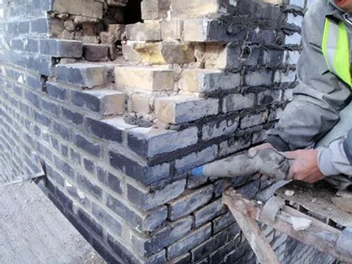
03
Brick & stone replacement
Spalled and shaled units cut out and replaced. Where a brick is no longer made, we stain it, or clean the original and relay it, integrating new brick at random so the wall has no obvious repair.
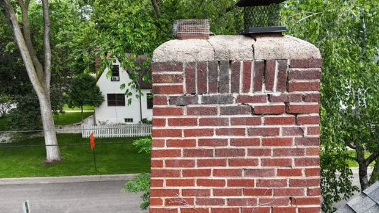
04
Veneer & fireplaces
Brick and stone veneer for additions, interiors and commercial fronts, tied into existing detail. Custom fireplaces — the trade this company was built on when every new house had a masonry firebox.
05
Waterproofing & sealing
Leak diagnosis first, sealer second. We find the source, correct the fall and the joints, then apply a repellent sealer. Ask for the same Industrial Masonry Sealer we use — $44.95 a gallon.
06
Steps, walks & foundation
Brick and stone steps, concrete walks and stoops poured to fall away from the house, plus basement and foundation repair. No job too small — a single cap or a whole facade.
Also: rebuilding, stucco repair, alterations, basement foundations and masonry sealer.
All services on masonry.com04 — Recent jobs
The proof is that you can’t see the work.
Photographs from Holmlund jobs around the Twin Cities. Drag the handle to compare the same chimney before and after a rebuild.
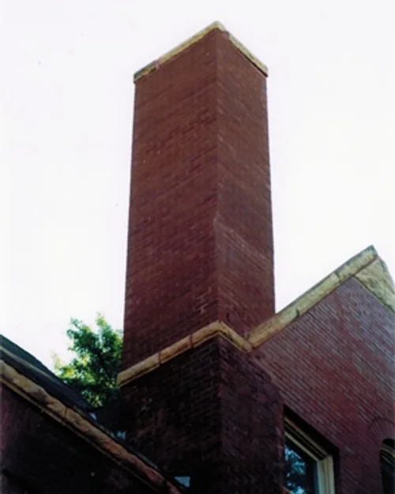
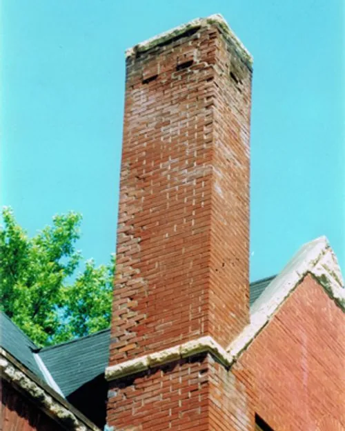
Job sheet — chimney rebuild
The stack was taken down and rebuilt with matching brick and mortar, and the cap re-formed with a positive fall so water runs off instead of pooling behind it.
- Type
- Residential chimney, full rebuild
- Scope
- Demolition, rebuild, new sloped cap
- Finish
- Brick and mortar matched on site
- Result
- No visible sign of maintenance
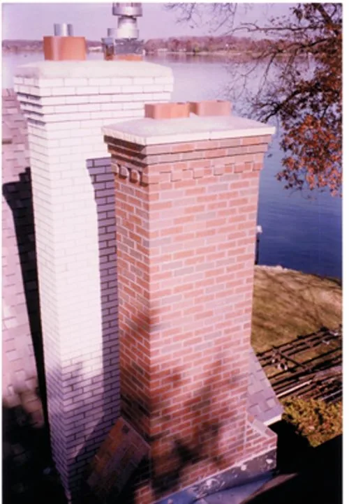
Twin corbelled chimneys
Both stacks rebuilt in new brick with a corbelled cap — the courses step out so water sheds clear of the wall instead of running down it.
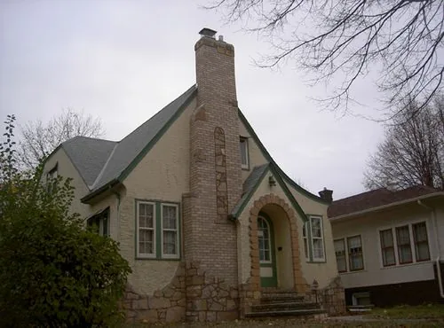
A chimney to match an arch
The original stucco chimney was built around sand-lime brick and had failed from the inside out. Rebuilt in face brick, keeping the stone entry as its reference.
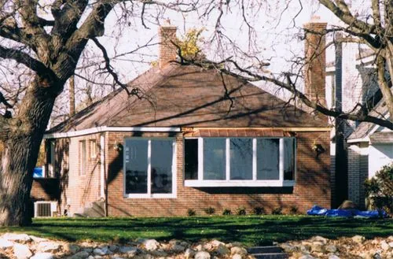
Brick veneer, bungalow
A postwar bungalow wrapped in brick veneer, with the new work returned into the original openings so the house reads as one build.
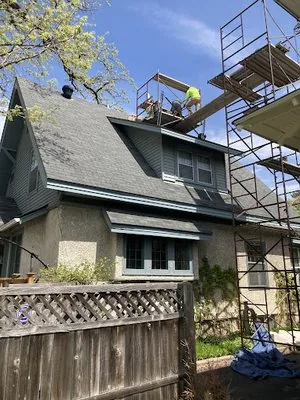
Rooftop repointing
Scaffold set at roof level so the crew could take down and rebuild a large chimney above the Minneapolis warehouse district, and repoint the wall around it.
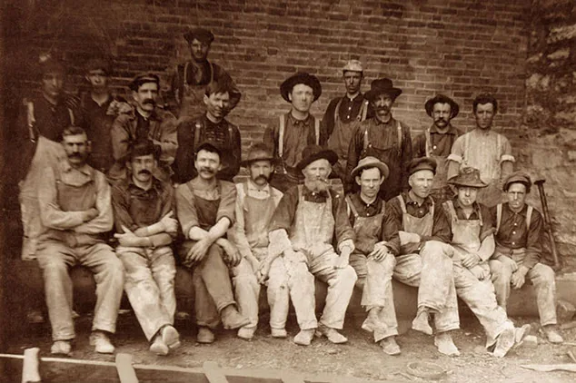
05 — The company
Since 1907, the same family trade.
Holmlund Masonry began as a masonry contractor when a masonry fireplace and a brick chimney were standard equipment in a new Minneapolis house. Tim Holmlund is the third generation of the family to run it, and one of the last masons here who trained on full masonry fireboxes and chimney construction.
The business has moved with the buildings. Years of installing custom fireplaces and wrapping new houses in brick and stone veneer turned into restoration — because the houses built then are the ones that need the work now. The shop is still on industrial North 2nd Street in the North Loop.
“No job too small.”
From the yard sign
NoteThe sign also says “No realtors please.” Holmlund works directly for owners and property managers — the people who live with the building long after the sale closes.
06 — How we work
Four steps, one standard.
-
01
Estimate — with photographs
We walk the building, photograph every area that is failing, and price the minimum needed to make it durable and water-resistant. The photos come with the bid, so you can see exactly what you are paying for.
-
02
Analysis report, if you want one
For larger or puzzling failures we write up what the issue is and how the damage happened — the same diagnosis that decides the sequence of the work.
-
03
Grind, cut out, rebuild
Joints ground deep, spalled units cut out, brick and mortar colours matched on site. The mortar is matched one shade darker than the weathered original, because a cure that dries lighter is what gives a repair away.
-
04
Protect and hand back
Caps re-sloped, rowlocks pitched, spouts discharging clear, sealer applied to sound surfaces. The site is cleaned at the end of every day, and the finished work should look like nothing happened.
07 — In their words
What owners say afterwards.
Reviews left by Twin Cities homeowners and property managers on Yelp and Angi.
“The Holmlund team did a great job on rehabbing our 1930s chimney, which was in rough shape. Very responsive — worked hard to make sure the brick would match other surrounding brick.”
“Derek, Tim and their crew did a great job for us. Easy to work with. Upfront pricing. Good communication. We had our chimney rebuilt on our 100 year old house.”
“They provided a very clear proposal with pictures of the areas to be done and the associated pricing. They showed up on time, did good work and cleaned up afterward.”
“The color of the mortar matched very closely with prior tuckpointing work. Tim decided to undo the work and re-do the section to get a better match, without us asking.”
08 — Where we work
Minneapolis, St. Paul,
and Wright County.
Our yard is a few minutes from downtown Minneapolis, so the metro is home ground. For medium and large projects we travel — past jobs include tuckpointing two commercial buildings in Grand Forks, North Dakota.
Talk to an estimator- Minneapolis
- St. Paul
- North Loop
- Wright County
- Bloomington
- Edina
- St. Louis Park
- Golden Valley
- Roseville
- Minnetonka
- Eden Prairie
- Surrounding metro
09 — Questions
Before you call.
Still unsure? Call Tim’s office at 612-827-4475 — you will speak to someone who has been on the scaffold.
Request an estimateLook at the top two feet first. A cracked or sandy cap, mortar joints that have receded, or brick faces flaking off are the usual signs. Water that gets in there freezes, lifts brick and works its way down the flue — so the earlier it is caught, the smaller the bill.
Matching colour is an art, and a 100% match is seldom possible — so we match the mortar one shade darker than the original, because a new joint that cures lighter is what stands out. If a brick is no longer made, we stain it, or clean and relay your original brick and introduce new ones at random through the field.
No. The crews are in-house employees, licensed, bonded and insured. The people who price the job are the people who are on it.
“No job too small” is on the yard sign for a reason. A cap, a set of steps, a window lintel, one bad panel of brick — those are the jobs that keep a building out of trouble.
Yes. Recent jobs include a chimney rebuilt after a lightning strike, brickwork rebuilt after a runaway pickup truck, and a commercial overhead rebuilt after a forklift. We document the damage and rebuild to match the original detail.
We do. Industrial Masonry Sealer is $44.95 a gallon and protects brickwork, chimneys, steps, walks and stucco once the surface is watertight and free of voids. If the joints are open, seal it after the mortar work — not instead of it. Product details.
Free estimates
Send us a photograph.
We will tell you what it needs.
Estimates are free, to owners and property managers across Minneapolis, St. Paul and Wright County. Tell us where the water is coming in, or send a photo of the chimney — you will get a straight answer.
Holmlund Masonry, Inc.
1410 North Second StreetMinneapolis, MN 55411
- Phone
- 612-827-4475
- Toll free
- 800-827-3050
- Fax
- 612-521-3562
- Estimates
- est@masonry.com
- General
- tim@masonry.com